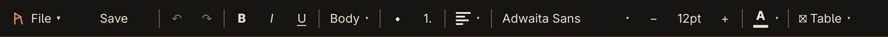
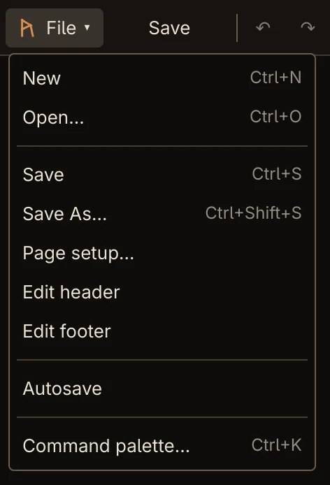

Guide
Getting started
Install Rune, learn the window, and open and save your first document.
Install
Rune runs on Linux. Packages for Arch / Omarchy, Debian 13 and Fedora 42 are attached to every GitHub release.
With autonomix-cli
On Arch / Omarchy, Debian 13 or Fedora 42, autonomix-cli installs the package for your system and keeps Rune up to date from GitHub Releases. It takes two steps: add only starts tracking Rune, then install installs it:
$ autonomix-cli add https://github.com/ninepointlabs/rune
$ autonomix-cli install runeinstall runs your package manager as root, so it asks for your password: through sudo in a terminal, or in a polkit password dialog when there is no terminal. After that, autonomix-cli update installs new releases.
autonomix-cli installs only these system packages, not the AppImage. On Ubuntu, Linux Mint and other Debian-based distributions it would pick the Debian 13 .deb, which needs Debian 13's Qt (6.8.2 or newer) and won't install where the distribution's Qt is older, such as Ubuntu 24.04. Use the AppImage there.
From a release
Download the package for your distribution from the latest release, then install it:
$ sudo pacman -U rune-*-x86_64.pkg.tar.zst # Arch / Omarchy
$ sudo apt install ./rune_*_amd64.deb # Debian 13
$ sudo dnf install ./rune-*.x86_64.rpm # Fedora 42Each package is built against its distribution's own Qt, so use the one that matches your system.
Other Linux distributions (AppImage)
On any other x86_64 distribution with glibc 2.34 or newer (Ubuntu 22.04, Debian 12, Fedora 39 and newer), use the AppImage: one file that brings its own Qt. Download rune-0.8.7-x86_64.AppImage from the latest release, make it executable and run it. The last line adds Rune to your app menu:
$ chmod +x rune-0.8.7-x86_64.AppImage
$ ./rune-0.8.7-x86_64.AppImage
$ ./rune-0.8.7-x86_64.AppImage --install-desktop-entryFrom then on you can start Rune from your app menu like any other app. If you move or rename the AppImage, run it with --install-desktop-entry again so the menu entry follows it. To take the entry out, run it with --remove-desktop-entry; the AppImage itself stays where it is.
Or open it with Gear Lever or AppImageLauncher, which add it to your menu and can keep it updated.
Note Word files (.docx and .doc) are opened and saved through LibreOffice, so install LibreOffice Writer too if you work with them. Rune's own format, .odt, needs nothing else.
The window
How you start Rune depends on how you installed it:
- From a package (Arch / Omarchy, Debian 13 or Fedora 42): open Rune from your app menu, or run
runein a terminal, optionally followed by a file to open:rune chapter-one.docx. - From the AppImage: once you've run
./rune-0.8.7-x86_64.AppImage --install-desktop-entry, open Rune from your app menu. Or run the AppImage directly, again optionally followed by a file:./rune-0.8.7-x86_64.AppImage chapter-one.docx.

The toolbar


From left to right:
- File ▾ opens the File menu (also Alt+F).
- Save saves the document. When autosave is on and everything is saved, it reads ✓ Saved.
- ↶ and ↷ undo and redo.
- B, I and U, then the paragraph style, lists, alignment, font, size, text colour and ⊞ Table. These are covered in Writing and formatting.
- On the right, ☰ opens the sidebar with the outline, notes and sources, and ✦ AI opens the AI panel.
In a narrow window, groups that don't fit move into a ⋯ menu, starting with Table. File, Save, bold, italic, underline and the font controls always stay on the toolbar.
The status bar
On the left is the file name, with ● when there are unsaved changes. Messages such as Saved … or Opening… appear there briefly. On the right are the word count and Page N of M.
Opening and saving


| Command | Shortcut | What it does |
|---|---|---|
| New | Ctrl+N | A blank document. |
| Open… | Ctrl+O | Opens .odt, .docx or .doc. |
| Save | Ctrl+S | Saves to the current file if it's .odt or .docx; otherwise asks where, like Save As. |
| Save As… | Ctrl+Shift+S | Saves as .odt (OpenDocument Text) or .docx (Word Document). |
Formats
.odt is Rune's own format. It is read and written directly, and it keeps everything, including your story notes, sources and citations.
.docx and .doc are converted by LibreOffice in the background, so the window never freezes. While a Word file opens, the document is read-only for a moment. Rune can save .docx but not .doc: a .doc is saved as .odt or .docx through Save As.
Unsaved changes
New, Open and closing the window check for unsaved changes first and ask Save changes to …?, with Save, Discard and Cancel. Escape counts as Cancel.
Autosave
Autosave is on by default. Once you pause typing, Rune saves on its own: after 5 seconds for an .odt and 30 seconds for a .docx. It also saves when you switch to another window, and after the AI finishes an edit.
Autosave only works for a document that already has a file, in .odt or .docx. A new document needs a first Save to give it one. Turn autosave off or on with File → Autosave, or Ctrl+K and Turn autosave off.
A successful autosave shows quietly on the Save button as ✓ Saved. If one fails, the status bar says Autosave failed: … and the button reads Save failed. Click it to try again.
Undo
Ctrl+Z undoes and Ctrl+Shift+Z redoes. Typing is undone a word at a time, not a letter or a whole paragraph at a time. Every formatting change, list and table operation, and every AI edit is exactly one step. Undoing back to your last save marks the document as saved again.
New and Open start a fresh undo history.
Colours and settings
Rune takes its colours from your Omarchy theme when it starts (~/.local/state/omarchy/current/theme/colors.toml). Elsewhere it follows your desktop's light or dark setting, and is dark if the desktop has none. Restart Rune after changing either.
Settings, such as autosave and your AI model, are kept in ~/.config/Rune/Rune.conf. AI sign-in secrets are not: they are in your desktop keyring.